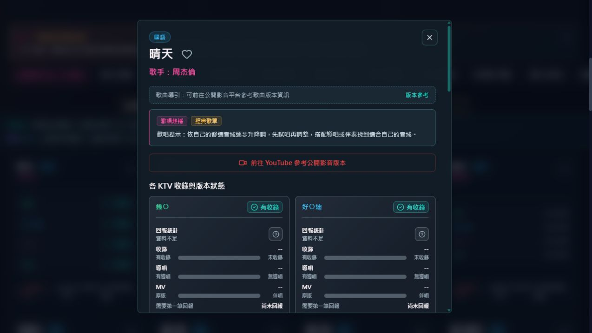

如何使用 TYFunLab 查 KTV 歌曲、導唱與 MV 類型
使用 TYFunLab 時，先搜尋歌名或歌手，再查看多家 KTV 平台的可能收錄狀態、導唱功能與 MV 類型，最後把想唱的歌加入我的歌本，現場再以包廂點歌系統確認。
實例一：找到周杰倫的〈晴天〉並加入歌本
查詢日期：2026/09/10。本例使用本站本機預覽歌庫，選擇全部廠牌、全部語種、全部字數，不勾選導唱或原版 MV；本次未連接即時回報服務，不代表正式站票數或門市實測。
- 回首頁輸入「晴天」，等待結果更新。搜尋也會帶出含這兩字的其他歌名；先找完整歌名「晴天」，再核對歌手「周杰倫」。
- 點「小卡模式」，再點這筆歌曲的歌名，打開「各 KTV 收錄與版本狀態」。本次錢○、好○迪顯示「有收錄」，美○顯示「尚未確認」；它們是站內資料線索。
- 分開讀收錄標籤與回報統計。截圖中「有收錄」與「資料不足」可以同時出現：前者來自主資料，後者表示此畫面沒有可用的回報統計，不能據此判定正式站完全無人回報。
- 導唱與 MV 各有自己的欄位。「--」不是零票的現場證明，也不能由收錄標籤推論有人聲導唱或官方 MV。
- 點歌名旁的愛心「加入歌本」，關閉詳情後點頁首「我的歌本」查看。歌本保存在目前瀏覽器，換裝置不會自動同步。

「前往 YouTube 參考公開影音版本」會開啟歌曲與歌手的搜尋結果，請自行核對發布者；它不是本站驗證過的官方影片，也不能證明包廂播放同一畫面。
哪些情境適合使用 TYFunLab
| 使用情境 | 適合查什麼 | 使用建議 |
|---|---|---|
| 聚會前準備歌單 | 查歌曲是否可能收錄、哪些平台比較有線索。 | 先收藏想唱的歌，現場再快速確認。 |
| 想唱新歌或冷門歌 | 查新歌、非主流歌曲或較少被點唱的歌曲。 | 用歌名和歌手都查一次，避免漏掉別名版本。 |
| 想確認有沒有導唱 | 查看導唱功能標示與社群回報。 | 不熟的歌可優先找有導唱線索的版本。 |
| 想確認畫面是否可能接近原版 MV | 查看 MV 類型是否偏向原版 MV 或伴唱帶類型。 | 把畫面期待和歌曲收錄分開判讀。 |
查不到歌曲時可以怎麼做
- 縮短歌名，只輸入最有辨識度的關鍵字。
- 改用歌手名稱搜尋。
- 嘗試中英文、日文、別名或括號外的主歌名。
- 放寬語種、字數、導唱與 MV 篩選。
- 若現場確認有收錄，使用提供建議協助補充。
延伸閱讀：查詢與行前準備分開看
如果你想知道搜尋結果每個欄位該怎麼判讀，請看 KTV 歌曲查詢指南；如果你已經要出發，想把候選歌曲整理成必唱、想唱與備用清單，請看 去 KTV 前歌單準備清單。
常見問題
TYFunLab 可以取代現場點歌系統嗎？
不可以。TYFunLab 是歡唱前參考工具，現場仍以包廂點歌系統為準。
查到收錄就代表現場可點播嗎？
不代表現場必然可點播。平台、門市、機台版本與更新時間都可能影響現場結果。
我的歌本可以跨裝置保存嗎？
目前我的歌本主要存在你的瀏覽器中，適合聚會前快速整理歌單。
導唱和原版 MV 要怎麼一起看？
先看是否收錄，再看導唱功能，最後看 MV 類型；三個資訊不要混成同一個判斷。
發現資料不一樣要怎麼辦？
可以使用提供建議或回報功能，把現場觀察提供給 TYFunLab 作為修正線索。
相關頁面
本站為民間獨立歌冊對照平台，不代表任何 KTV 業者。資料會隨平台、門市與時間變動，歡唱現場請以包廂點歌系統為準。